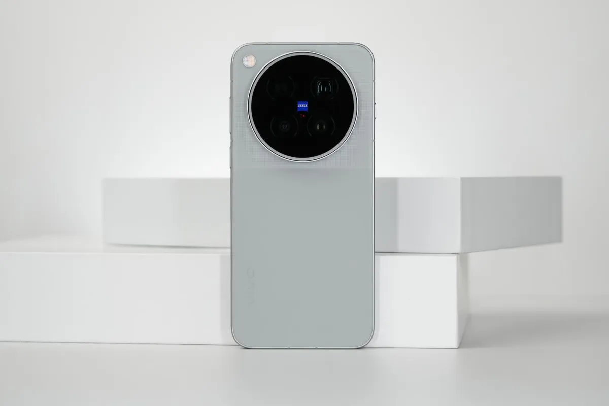
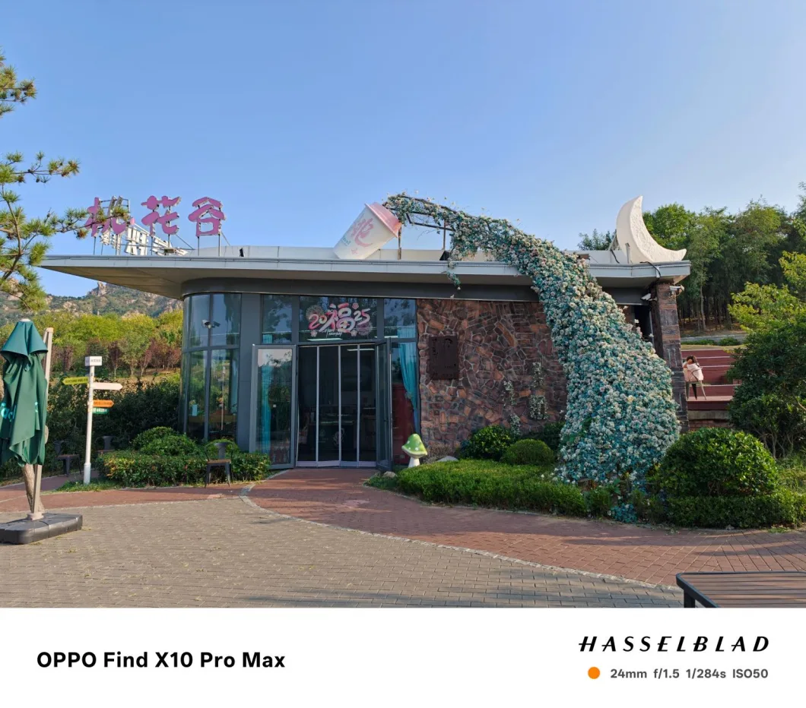
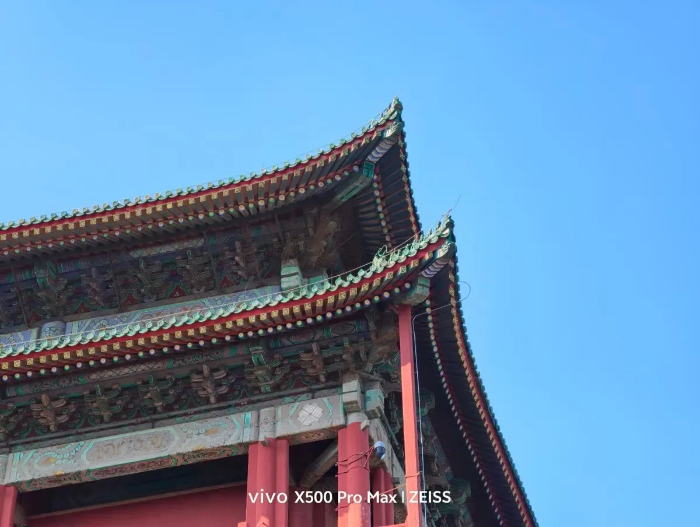
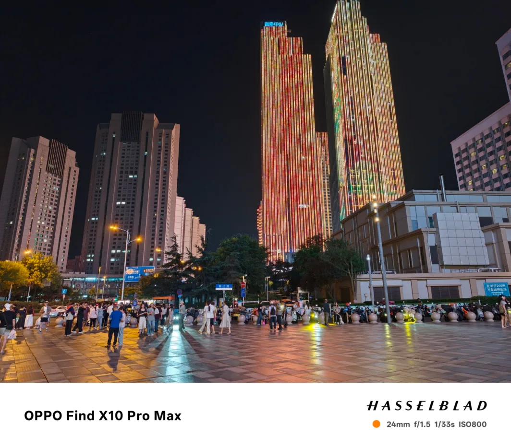
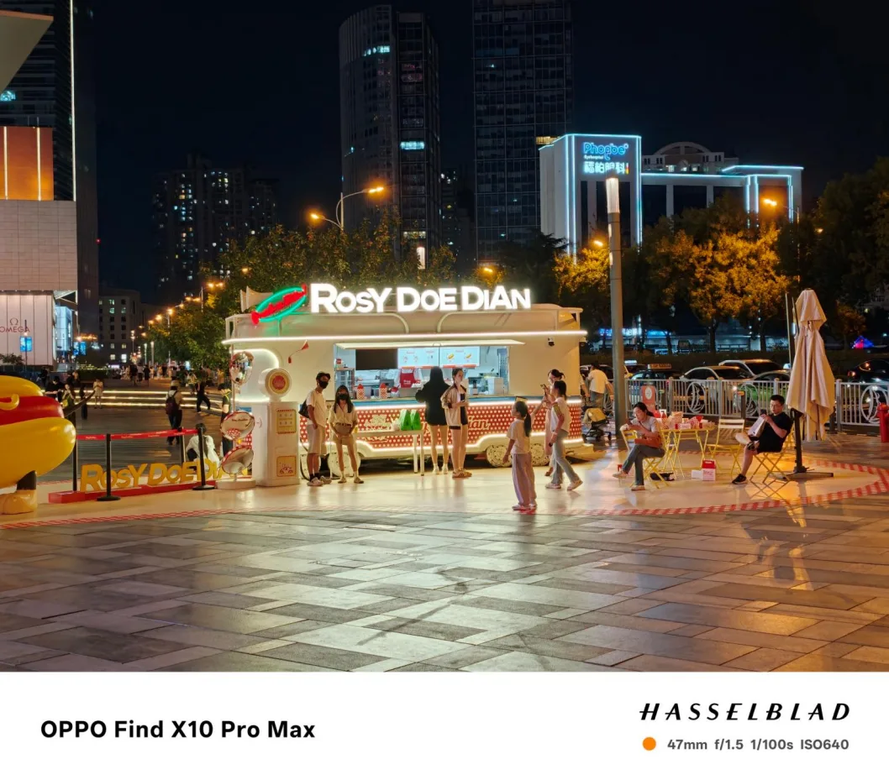
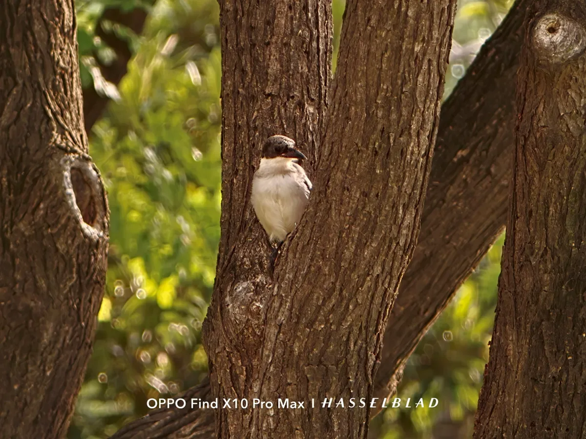
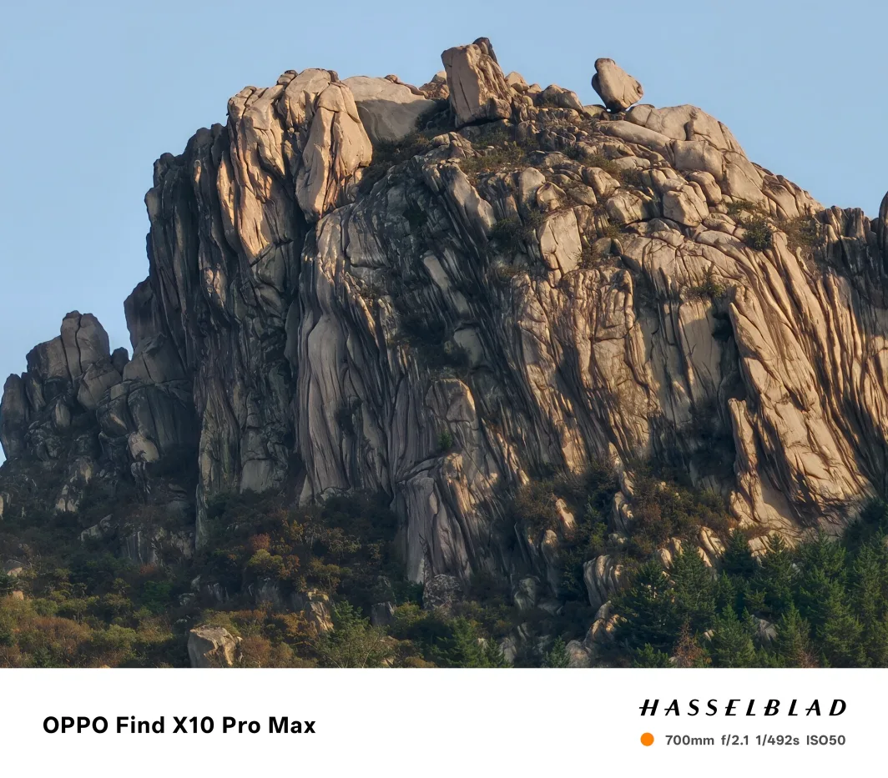
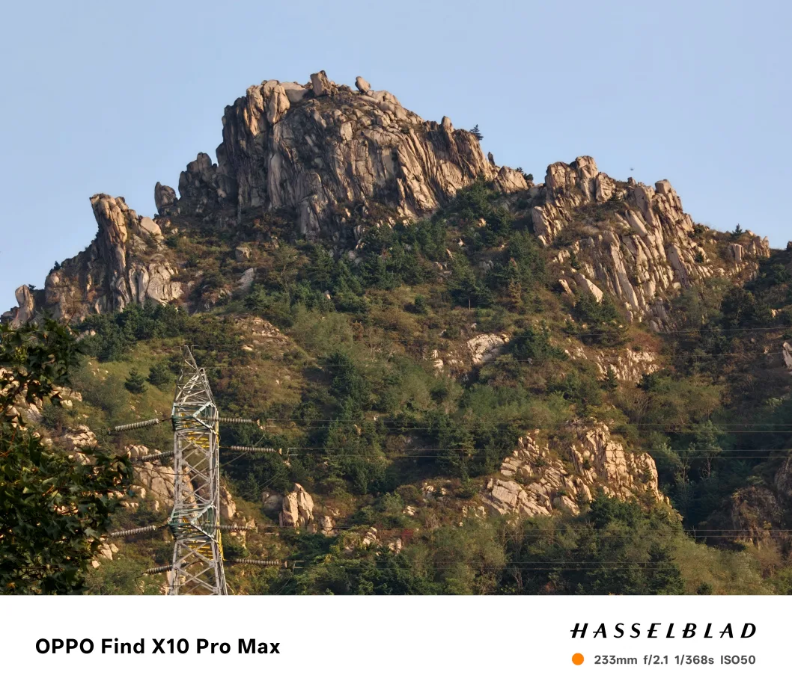
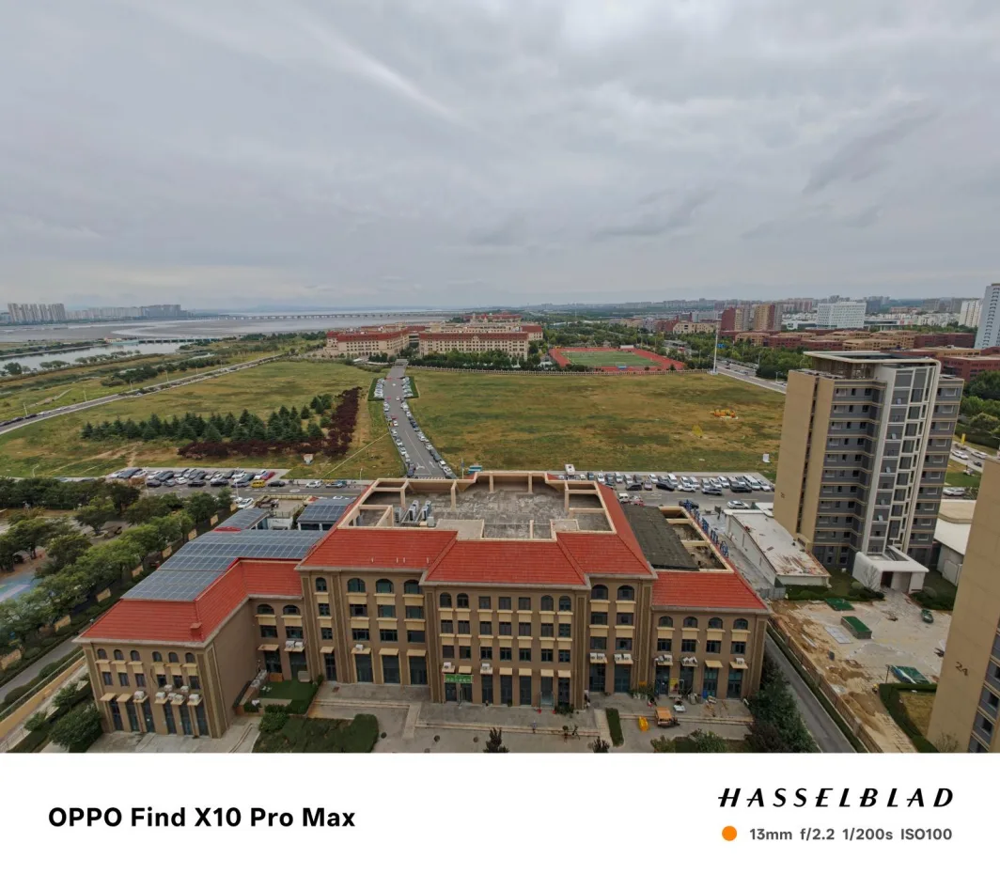

تقنية7 دقائق
كاميرا Zeiss أم Hasselblad؟ vivo X500 Pro Max ضد OPPO Find X10 Pro Max
Zeiss في هاتف vivo وHasselblad في هاتف OPPO: كلاهما يحمل مقرّبة بدقة 200 ميجابكسل، لكن الفلسفة مختلفة. هنا نقارن المواصفات الرسمية وما نشرته المراجعات الصينية في مقالاتنا. لا يوجد بعد اختبار كاميرا رقمي موحّد (مثل DXOMARK) لأيّ منهما في المصادر التي اعتمدناها.


جدول مقارنة الكاميرات
| المواصفة | vivo X500 Pro Max (Zeiss) | OPPO Find X10 Pro Max (Hasselblad) |
|---|---|---|
| الكاميرا الرئيسية | 50MP، Sony LYT-L910، 1/1.28 بوصة، f/1.57 | 200MP، 1/1.3 بوصة، f/1.5 |
| المقرّبة | 200MP APO، HP0 قياس 1/1.4 بوصة، 85 مم، f/2.67 | 200MP، 1/1.56 بوصة، 70 مم (3x)، f/2.1 |
| فائقة الاتساع | 50MP، f/2.0 مع تركيز تلقائي | 200MP، f/2.2 |
| الأمامية | غير متوفر | 50MP |
| الفيديو | 4K بمعدل 240 إطارًا، وLog بعمق 10 بت | غير متوفر |
| الملحقات | ملحق تقريب خارجي بعدسة مكافئة لـ400 مم | ملحق تقريب خارجي (teleconverter) |
| نتيجة اختبار كاميرا رقمي | غير متوفر | غير متوفر |
| السعر الابتدائي | ¥6,999 | ¥6,799 |

عيّنات الكاميرا حسب السيناريو
النهار


الغروب والإضاءة المنخفضة


البورتريه
التقريب



الزاوية الواسعة والماكرو والفيديو

لم نجد عيّنة زاوية واسعة موثّقة البعد البؤري لـ vivo X500 Pro Max، ولا عيّنات ماكرو أو لقطات فيديو لـ Find X10 Pro Max في المصادر التي راجعناها.
ماذا قالت المراجعات الصينية؟
- vivo X500 Pro Max: عرضت AnTuTu عينات من العدسة الرئيسية 24 مم والمقرّبة 85 مم والملحق الخارجي. الخلاصة: عدسة 85 مم مفيدة لعزل العنصر، والقص العالي يُظهر آثار المعالجة. واعتبر مقال على SMZDM أن الكاميرا الرئيسية والواسعة والتثبيت تراجعت عن X300 Ultra، وأن الهاتف "متخصص في الفيديو".
- Find X10 Pro Max: نشرت AnTuTu عينات بورتريه وعرضت ملحق التقريب الخارجي، دون أرقام قياس للصورة.
الأسعار بالدولار والريال
| الهاتف والنسخة | السعر الرسمي في الصين | بالدولار | بالريال السعودي |
|---|---|---|---|
| vivo X500 Pro Max 12+256 | ¥6,999 | 1,046$ | 3,924 ريال |
| vivo X500 Pro Max حزمة صنّاع المحتوى | ¥12,999 | 1,943$ | 7,287 ريال |
| OPPO Find X10 Pro Max 12+256 | ¥6,799 | 1,016$ | 3,811 ريال |
| OPPO Find X10 Pro Max أعلى نسخة | ¥8,999 | 1,345$ | 5,045 ريال |
سعر الصرف: 1 يوان = 0.149493 دولار = 0.560594 ريال سعودي (open.er-api.com، تحديث 22 أكتوبر 2026، 04:02 بتوقيت مسقط). الأسعار المحوّلة تقريبية ولا تشمل الشحن والجمارك.
من يشتري أي هاتف؟
- vivo X500 Pro Max: لمن يصوّر الفيديو والحركة البطيئة ويحتاج مقرّبة 85 مم للبورتريه والحفلات.
- Find X10 Pro Max: لمن يريد ثلاث عدسات بدقة 200MP وبطارية أقوى في الاختبارات (69% مقابل 50% بعد 6 ساعات في AnTuTu) بسعر أقل بـ200 يوان.
- الحكم على جودة الصورة نفسها يحتاج اختبارًا مقارنًا لم يُنشر بعد في مصادرنا.
تقييمات المصادر الصينية
- فيفو X500 برو ماكس: أول "Pro Max" في سلسلة X، بطارية 8000 مللي أمبير وتصوير مقرّب واستقرار أداء متوسط: عينات AnTuTu ومقارنة SMZDM.
- أوبو Find X10 Pro Max: معالج Dimensity 9600 Pro وثلاث كاميرات بدقة 200 ميغابكسل وبطارية 8,000mAh: عينات AnTuTu.
آخر تحديث للتقييمات: 22 أكتوبر 2026
#midroid5G #كاميرا #تقنية